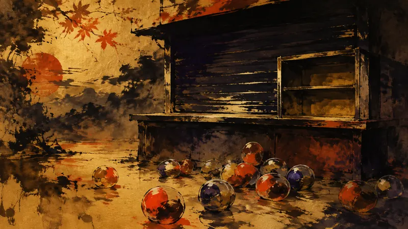
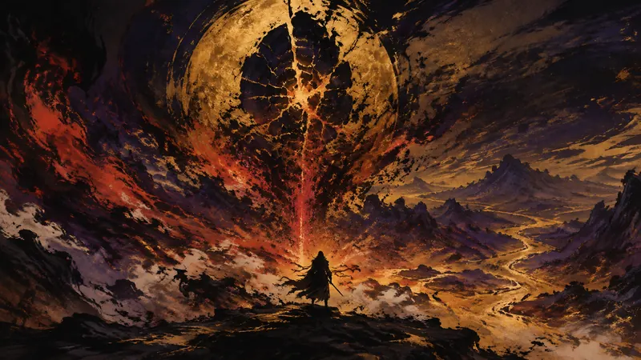
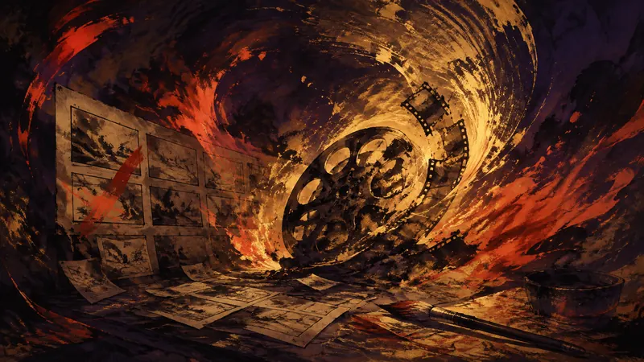
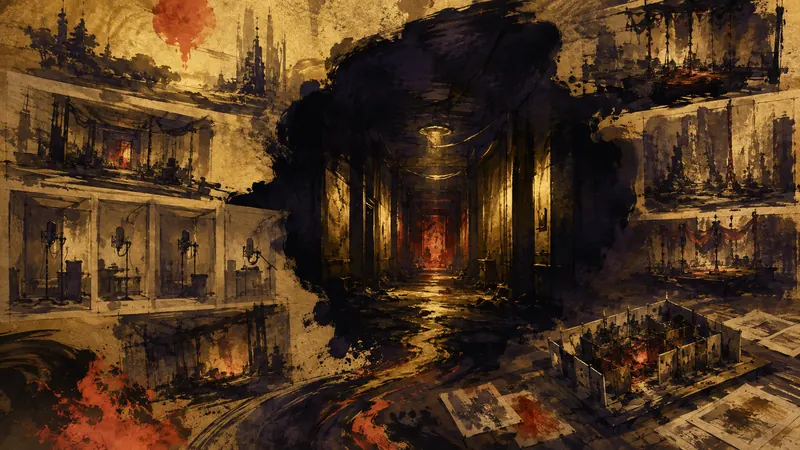
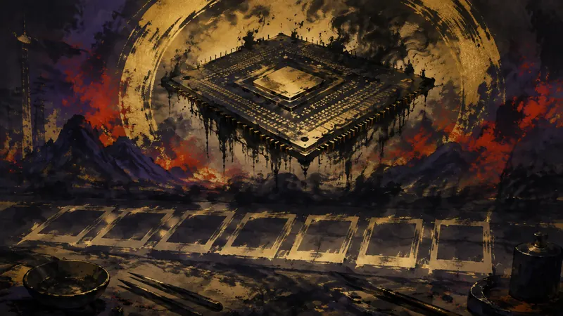
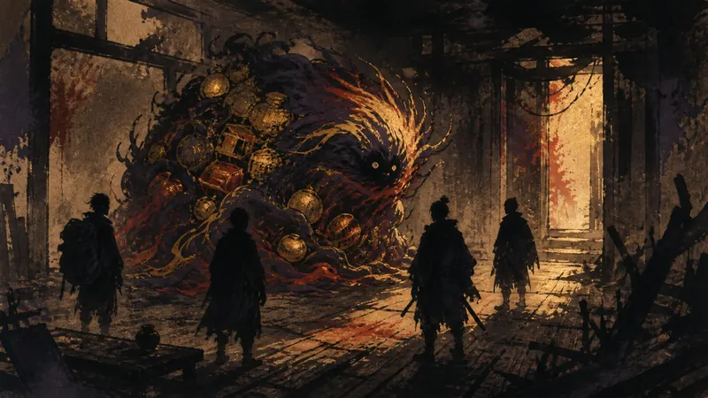
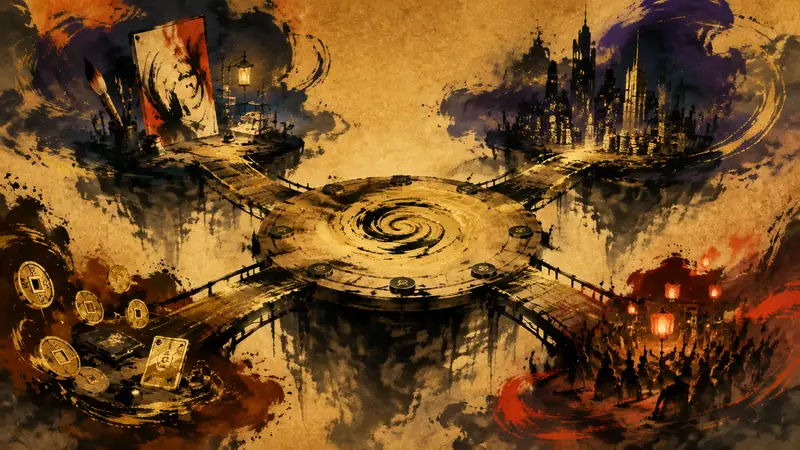
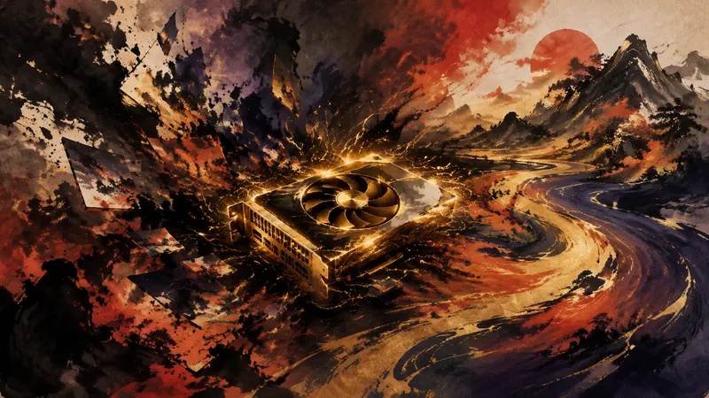

4Gamers
邁阿密戴德縣想藉《GTA 6》行銷城市，卻遭警長與議員反對（譯）
邁阿密縣府想借《GTA 6》吸引觀光，警長卻反問：公部門要替犯罪遊戲背書嗎？
觀點：玩家喜歡追蹤《GTA 6》的現實映射並不奇怪，但城市把遊戲當成宣傳工具時，收益與形象風險不會平均分配。
先鴉｜黎明快訊
玩家能動性：政策如何限制它、產業如何形塑它、敘事設計如何實現它。
最新消息
第一線
4Gamers
邁阿密縣府想借《GTA 6》吸引觀光，警長卻反問：公部門要替犯罪遊戲背書嗎？
觀點：玩家喜歡追蹤《GTA 6》的現實映射並不奇怪，但城市把遊戲當成宣傳工具時，收益與形象風險不會平均分配。
4Gamers

本則條目已應來源要求下架，原文內容不再顯示，處理紀錄請見更正頁。
TechNews 科技新報（含遊戲）

本則條目已應來源要求下架，原文內容不再顯示，處理紀錄請見更正頁。
Polygon

真正有意義的選擇，不一定把你送往另一個結局，也可能改變你看懂世界與採取行動的方式。
觀點：把選擇從結局數量移到世界中的具體後果，玩家得到的是更能理解自己決定的遊玩空間。
Polygon

一組作弊碼就能把《GTA》從劇情遊戲變成城市實驗場，玩家追求的未必是完成任務。
觀點：作弊碼讓玩家保留一種想停就停、想胡鬧就胡鬧的遊玩權，這種快樂不需要被轉化成進度或成就。
4Gamer.net

蘭斯巴恩以限時轉蛋登場，抽滿 100 次才保證入手，活動只開九天。
觀點：取得條件本身就是這則消息的重點：九天的窗口，加上抽滿一百次才保證入手，把「要不要練這隻角色」換成了「現在要不要付錢」。
Gry-Online.pl
本則條目已應來源要求下架，原文內容不再顯示，處理紀錄請見更正頁。
JeuxVideo.com

《Guild Wars 3》讓奔跑速度影響傷害、隊友踩盾跳高，但 pre-alpha 預覽還不是長期承諾。
觀點：MMORPG 的吸引力在於長期共同生活，但這也把玩家的時間綁在持續運作的世界上。
JeuxVideo.com

這台 PS2 沒有安靜黑屏，而是在《Need for Speed》賽道上用扭曲畫面完成最後一場遊戲。
觀點：老主機壞掉提醒我們，玩家與遊戲的關係也受硬體壽命支配；收藏與懷舊的快樂是真實的，但不等於設備永遠可用。
JeuxVideo.com

本則條目已應來源要求下架，原文內容不再顯示，處理紀錄請見更正頁。
Igromania
巽完二的新預告先讓玩家看見重製版的角色方向，真正的改編幅度仍藏在影片之外。
觀點：角色預告讓熟悉原作的玩家重新建立期待，也讓新玩家有機會先觀察作品如何處理既有角色。
Igromania

《Left 4 Dead 2》的成品背後，還有角色配音、內容取捨與預告外流留下的開發現場。
觀點：開發回憶把遊戲從一個完成品拉回許多人共同做出的工作，玩家可以因此更理解作品，也不必把理解轉成對系列的義務。
Arab Game News（中東／波灣地區，英語）
兩份備忘錄把教育與 AI 帶進遊戲發展計畫，後續能否變成實際機會仍待觀察。
觀點：對想進入遊戲業的人來說，教育資源增加了入口，但後續機會目前仍停在「探索」階段，能否轉成可選的工作與創作路徑尚未確定。
Jagat Play（印尼，印尼語）

Nova Lake-S 可能從 2026 年底等到 2027 年初，玩家面對的是升級時機與新平台成本的雙重取捨。
觀點：對玩家來說，延後的不只是零件上市日，也是一段被迫留在舊硬體上的時間；想升級的人少了一個可比較的選項，暫緩購買反而成了較穩妥的選擇。
GamingOnPhone（印度，英語）

本則條目已應來源要求下架，原文內容不再顯示，處理紀錄請見更正頁。
第一線
4Gamer.net

在《FEEDSTOCK》裡，再拿一件物品不只是貪心，而是可能讓整隊更難活著撤出去。
觀點：這種設計把「再拿一件」的慾望變成隊伍必須共同承擔的風險，玩家可以為了更多資源選擇冒險，也可以保留退出的權利。
Gry-Online.pl

上一款資料片在 Steam 拿到 70% 負評，Paradox 這次把大型 DLC 往後推，先修既有系統。
觀點：延後會打亂玩家安排戰役與擴充內容的時間，但長期支援遊戲最怕的是把固定更新節奏當成必須履行的承諾。
Arab Game News（中東／波灣地區，英語）

當遊戲產業的資金管道也成為討論主題，真正的問題是誰能決定哪些作品獲得下一輪資源。
觀點：融資報告談的是產業如何取得下一輪資金，玩家則承擔這些資金選擇最後會轉化成哪些內容與服務。
Arab Game News（中東／波灣地區，英語）

五年任期結束後，Savvy Games Group 原本的人才與遊戲布局能否維持，成為下一個觀察焦點。
觀點：管理層離任會影響公司如何分配資金、人才與作品方向，玩家卻很少能直接參與這些決定。
Jagat Play（印尼，印尼語）

這次驅動更新同時補上兩款新作支援與 RX 9000 崩潰修正，但仍留下顯示卡記憶體限制。
觀點：驅動更新把遊玩權交回硬體與軟體的相容性，而玩家往往只能等待廠商修正。
Jagat Play（印尼，印尼語）

DLSS 5 將擴大到 RTX 40，但真正的考驗是較早世代硬體能否負擔神經渲染的成本。
觀點：讓較舊硬體接上新技術，玩家就不必因為一項圖像功能立刻更換整台電腦。